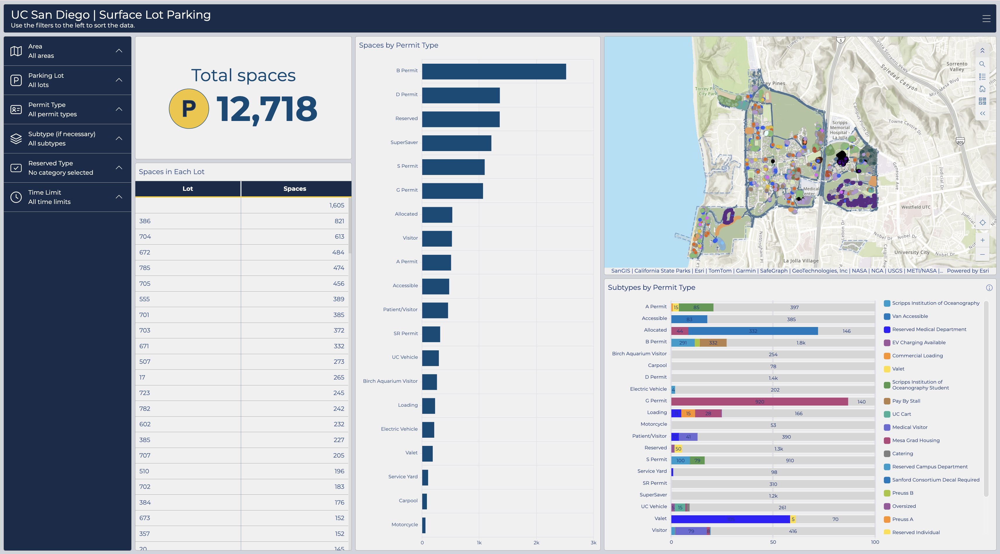

Data Science · UC San Diego
I turn complex data into clear, interactive stories.
I'm a Data Science student at UC San Diego specializing in Machine Learning & AI, with a minor in Cognitive Science. Originally from Redlands, California, I'm fascinated by how people understand information, from how AI is changing that to how ArcGIS turns location data into maps people can act on. Outside of class, I work with UC San Diego Transportation Services on the data and systems behind campus operations, and I'm a grader for an intro data science course.
Open to internships in data science, data visualization, and GIS & analytics.

With my team, I mapped every surface-lot parking space on campus in ArcGIS, then built an interactive dashboard for Transportation Services that breaks down all 12,718 spaces by area, lot, permit type, and time limit. It was highlighted to campus leadership, including the Vice Chancellor.
See all projects →